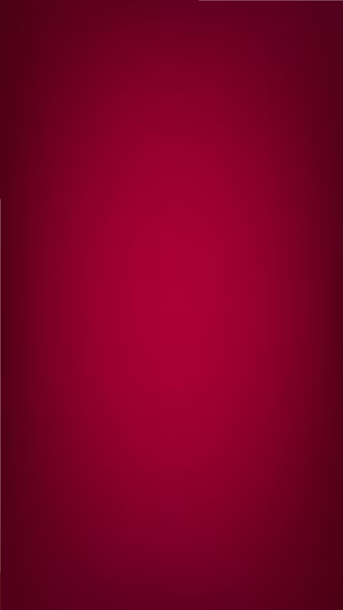

Homilía y Predicación Dominical

«Discípulos Misioneros en la Realidad de México»
Pautas exegéticas y subsidios teológico-pastorales listos para enriquecer tu homilía del próximo domingo. Pensado para iluminar las problemáticas actuales de nuestras comunidades mexicanas.
Subsidios para Redes (Frases Compartibles)
San Juan Pablo II
Ver y Compartir
Reflexión Teológica
Ver y Compartir¿Teología para qué? Teología para ser amigo de Dios
Fray Martín Gelabert Ballester, OP
"La teología no busca solo comprender con la razón, sino transformar el corazón. Estudiar teología es una vía profunda de oración y discernimiento cuyo fin último no es el saber académico, sino alcanzar la intimidad con el Creador y aprender a ser, verdaderamente, amigo de Dios."
Leer Artículo CompletoCatálogo Teológico Digital
Documentos vigentes del Magisterio de la Iglesia, encíclicas y las líneas pastorales de la Conferencia del Episcopado Mexicano (CEM).
Abrir Repositorio de DocumentosActualización Presbiteral

"El estudio profundo de la Teología no es un lujo académico; es una exigencia caritativa para servir mejor al Pueblo de Dios en México ante los desafíos de la secularización."
¿Qué documento rige actualmente los criterios universales para la formación y actualización de los sacerdotes?
Oferta Académica Superior

Licenciatura Pontificia en Teología Dogmática
Modalidad semipresencial / intensiva. Estructurada específicamente para balancear el estudio de alto nivel con las necesidades de la cura de almas parroquial.
Diplomado de Actualización en Teología Pastoral
Herramientas para la dirección espiritual contemporánea, discernimiento comunitario y desafíos de las nuevas tecnologías en la parroquia.
Admisiones e Incorporaciones

Contacto Directo
Consulte las facilidades, convenios con diócesis y aranceles especiales para el clero secular o religioso.
Tu Formación Continua
Avance de lecturas recomendadas